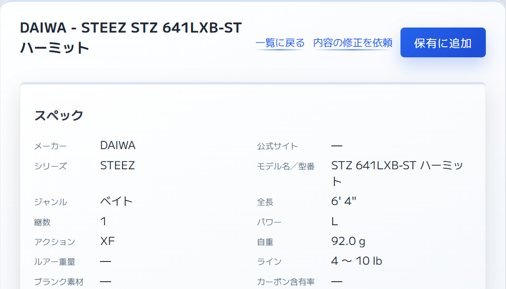
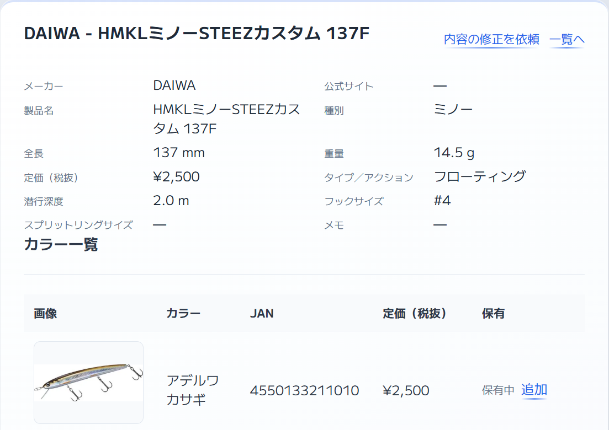
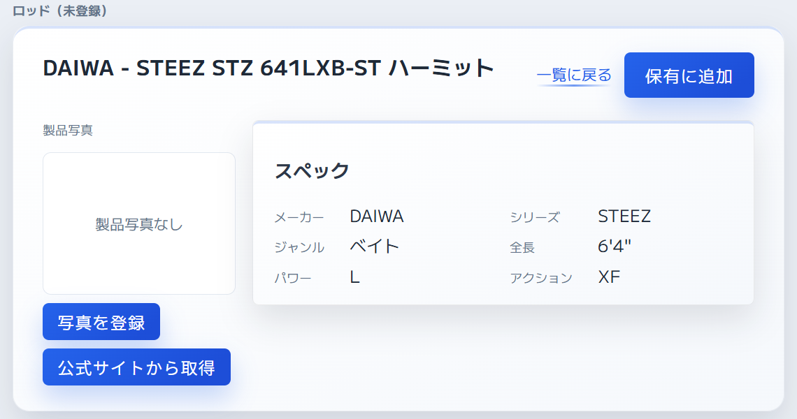
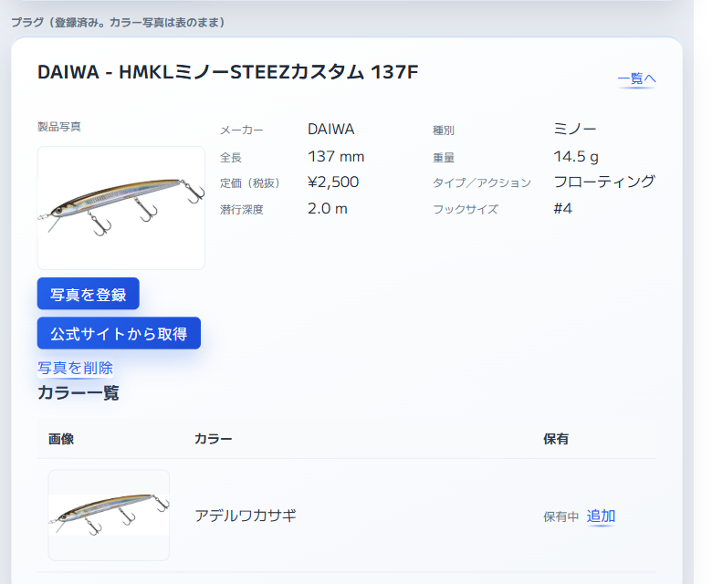
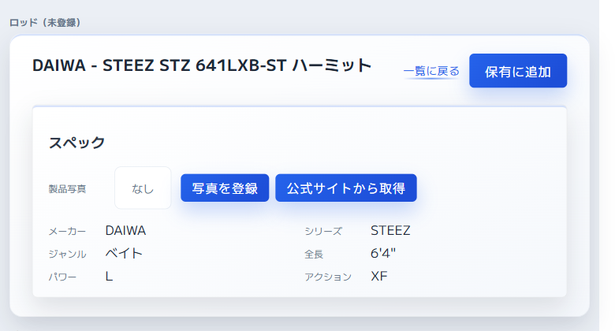
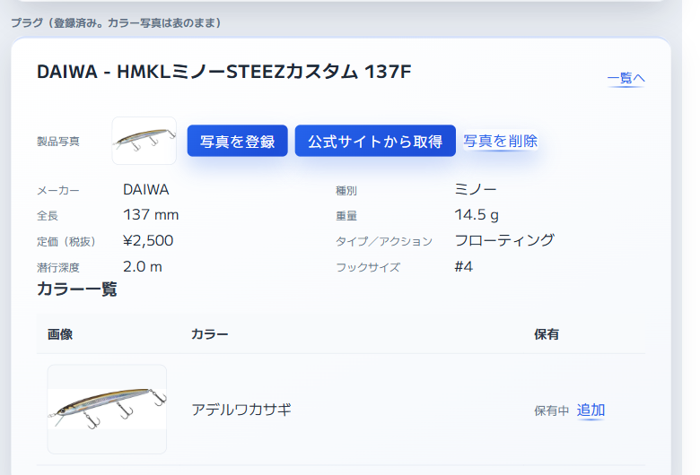
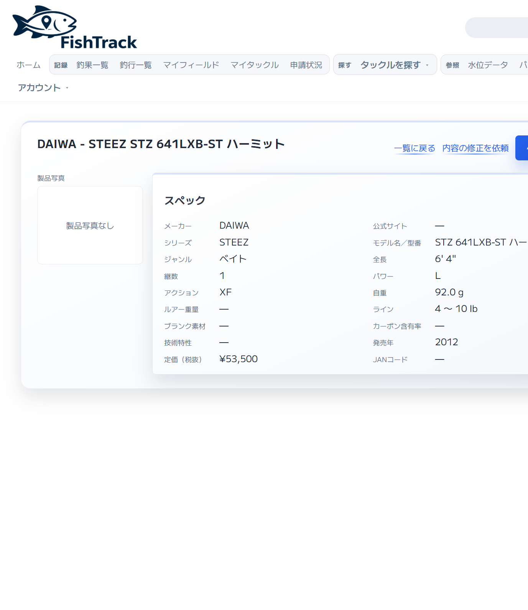

RESOLVED
MED
FishTrack
FT-H28 ロッド・リール・ルアーの型番詳細に、製品写真が無い
2026-10-16 に案Aを採用。2026-10-28、写真はスペック取込で順次入るためクローズ。
事象
ロッドとリールの型番詳細は、見出しとスペックだけである。プラグとワームはカラーごとの写真がカラー一覧にある。型番に1枚の製品写真を置く場所は、どのカテゴリにも無い。


対象箇所
- URL:
/tackle/rod-model/<id>、/tackle/reel-model/<id>（同じ型番詳細）、/lure-plug/<id>/detail、/lure-worm/<id>/detail - 位置: 見出し（
.card-header）の直下、スペック（ロッド・リールは.card--nested、ルアーは.details-list）の手前。ルアーは続けてh3.lure-color-section__title - 部品: ルアーのカラー写真（
.lure-color-photo）は残す。製品写真とは別 - 対象外: 一覧カードのサムネ、釣果写真、マイタックルの所持写真。MyPokedex。未ログイン LP。SP の撮影はしていない（案Aは狭い幅では写真をスペックの上に積む）
何が問題か
型番を開いても、既存モデルには製品の見た目がまだ無い。ルアーはカラー写真があるので、型番の写真と色違いの写真が同じものに見える。登録・差替・削除は詳細のボタンにせず、スペック取込で行う。一般の閲覧は写真か「製品写真なし」だけ。
改善策
案Aを採用した。見出しの下で、左が製品写真、右がスペック。未登録は「製品写真なし」。ルアーのカラー一覧はそのまま下に残す。案Bは不採用。詳細に「写真を登録」「公式サイトから取得」「写真を削除」は置かない。取込行の productImageUrl があるときだけ登録・差替し、空なら削除する。キーが無い再取込は既存の写真を残す。
案A スペックの左に製品写真 採用
見出しの下で、左が製品写真、右がスペック。幅が足りないときは写真をスペックの上に積む。ルアーはカラー一覧をそのまま下に残す。開いたときに製品が先に見え、カラー表の小さい画像と大きさが違う。
- メリット: 製品と色違いが分かれる。ロッド・リール・ルアーで同じブロック
- デメリット: スペックの横幅が狭くなる


案B スペック先頭の1行 不採用
スペックの幅はそのまま。先頭に小さい製品写真と操作を1行置く。カラー一覧は案Aと同じ。
- メリット: スペックの読みやすさは現状のまま
- デメリット: 製品写真がスペックの1項目に見え、カラー表の画像と大きさが近い


実施した改善
案A。見出しの下で左が製品写真、右がスペック。未登録は「製品写真なし」。詳細に写真の登録・差替・削除は置かない。写真はスペック取込の productImageUrl で入り、順次取り込み中。全型番が埋まるまで課題は開いたままにしない。案Bは不採用のまま。
再診断
2026-10-28。ローカルのロッド型番詳細 /tackle/rod-model/1。見出しの下、左が「製品写真なし」、右がスペック。写真の登録ボタンは無い。この型番の写真は未取り込み。リール・プラグ・ワームも同じ部品。
